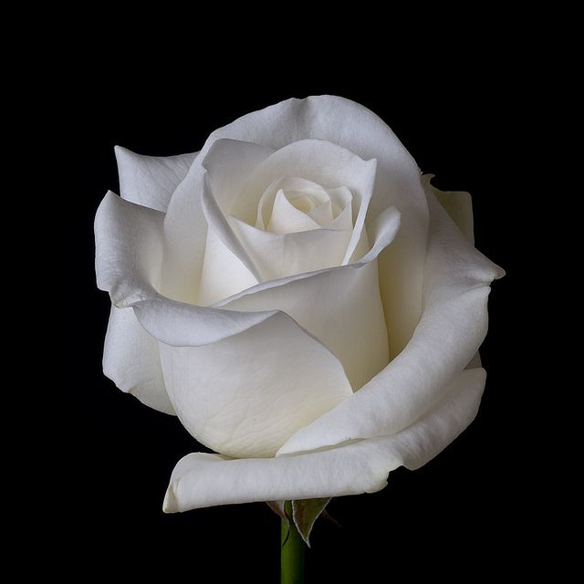

Trandafirul alb a fost considerat un adevărat simbol de-a lungul timpului. Acesta se regăsește în numeroase file ale istoriei, credinței, alchimiei și poemelor. Dincolo de frumusețea formală și structurală a trandafirului alb, această floare a avut pe parcursul timpului numeroase semnificații. El figurează astăzi ca un omagiu adus noului început sau ca o expresie a iubirii, credinței și speranței. Descoperă în rândurile următoare mai multe informații despre simbolistica trandafirului alb și ocaziile în care poate fi oferit.
Du-te pe pagina 1 Du-te pe link exterior 